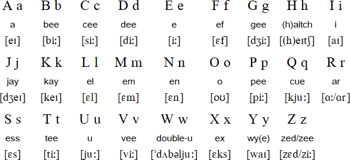
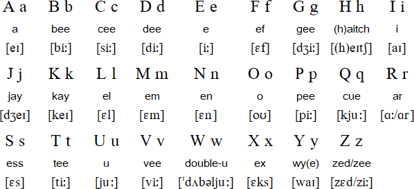

English is a West Germanic language first spoken in early medieval England which eventually became the leading language of international discourse in today's world.[4][5][6] It is named after the Angles, one of the ancient Germanic peoples that migrated to the area of Great Britain that later took their name, England. Both names derive from Anglia, a peninsula on the Baltic Sea. English is most closely related to Frisian and Low Saxon, while its vocabulary has been significantly influenced by other Germanic languages, particularly Old Norse (a North Germanic language), as well as Latin and French.[7][8][9]
English has developed over the course of more than 1,400 years. The earliest forms of English, a group of West Germanic (Ingvaeonic) dialects brought to Great Britain by Anglo-Saxon settlers in the 5th century, are collectively called Old English. Middle English began in the late 11th century with the Norman conquest of England; this was a period in which English was influenced by Old French, in particular through its Old Norman dialect.[10][11] Early Modern English began in the late 15th century with the introduction of the printing press to London, the printing of the King James Bible and the start of the Great Vowel Shift.[12]
Modern English has been spreading around the world since the 17th century by the worldwide influence of the British Empire and the United States. Through all types of printed and electronic media of these countries, English has become the leading language of international discourse and the lingua franca in many regions and professional contexts such as science, navigation and law.[4] Modern English grammar is the result of a gradual change from a typical Indo-European dependent marking pattern, with a rich inflectional morphology and relatively free word order, to a mostly analytic pattern with little inflection, a fairly fixed subject–verb–object word order and a complex syntax.[13] Modern English relies more on auxiliary verbs and word order for the expression of complex tenses, aspect and mood, as well as passive constructions, interrogatives and some negation.